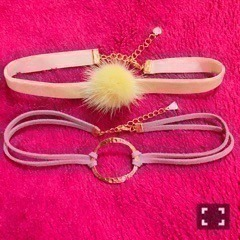
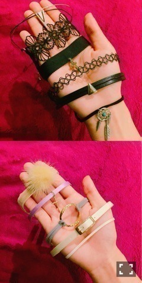

| 2016/08 06 Sat | 斎藤ちはる チョーカーコレクターとは。(´>∀<｀)ゝ |
ちはるーむへようこそ\( ˆoˆ )/
これが、昨日載せようと思った
髪の毛染めた写真だよ〜♪
光の加減で髪の色の印象が
全然変わるの！
いつかインナーカラーとか
グラデーションとか
してみたいな〜って思ってる( ◦˙ ˙◦ )
-------------------------♡
今日は真夏の全国ツアー
名古屋ガイシホール初日でした！
名古屋ね...
本当にね...
熱気が凄い！！
とてつもなく暑い！！
顔と首から汗がとめどなく溢れていたよ。
ふと見たら万理華も同じくらい
汗がでていました(_ _).｡o○
汗っかきは辛いよ(_ _).｡o○
そして、正確には分からないけど
大阪の時よりも
ちはるーむめいとさんが
多かったような気がする...！♡
それに、ちはるーむめいとさんに
多く気づけたっていう事は
心に余裕が出来たって事なのかもしれないから
いい変化だね(﹡ˆ ˆ﹡)
赤と青のサイリウムや、
私のタオルは
ステージから見て
こんな風に目立って見えるよ(_ _).｡o○
何故か私だけ光を浴び、
カメラ目線のこの写真のように。
光輝いて見える。
ちょっとこの写真面白いから好き。笑
なんでこんなに笑顔なんだろう...
って考えてしまう。笑
明日は２公演！！
悔いなく楽しんできます！！
-------------------------♡
#ChihaOOTD
今日紹介するのは...！？！
(またかよ。って思わないでね...)
(お願いだから...)
新しいチョーカーですー！
わーい

上のポンポン付きのチョーカーは
分かりづらいけど茶色なの！
最近茶色の服が多かったから
それらに会うチョーカーが欲しいなと
思っていたら見つけました♪
どこのお店か忘れちゃったから
思い出したらまた載せるね♪
確か黒もピンクもあったはず！！
下のチョーカーは、
初めてのグレーチョーカー♪
アクセサリー屋さんで見つけて
一目惚れしちゃいました。
真ん中におっきなモチーフがある
チョーカーって今まであまり
持ってなかったから丁度良かった〜
今日、下のチョーカー付けてたら
純奈に早速、
あ！新しいチョーカーだ！
気合い入ってますね〜(`･ω･´)
って言われたよ笑
そりゃあ気合い入れるよ〜♪
だってライブだもん。
昨日持ってるチョーカーを
ほぼ全て巻いてみました。
題して
「ちーちゃんのチョーカー巻き。」

圧倒的に黒が多い！！
そして、これで全てじゃないっていうのが
恐ろしい！！
好きでハマるって怖いね！！
でも楽しいね！！
これからも
「チョーカーコレクター」
としての名を轟かせていきたいと思います。
-------------------------♡
♬ ChihaMusic
「ないものねだり」KANA-BOONさん
KANA-BOONさんを好きになった
最初の曲。
MVの雰囲気や
曲のテンポの良さが
とっても好き。
テンションを上げるのにぴったり。
今は私は
リオオリンピックを見てるよ♪
男子体操予選！！
同じ人間のはずなのに
なんでこんなにも
跳べたり空中で回ったり出来るんだろう...
本当に凄い。
感動する。
頑張れ日本(> <)！！！
眠たいけどオリンピック見たいから
なかなか寝れない(_ _).｡o♪笑
おやすみ〜
斎藤ちはる